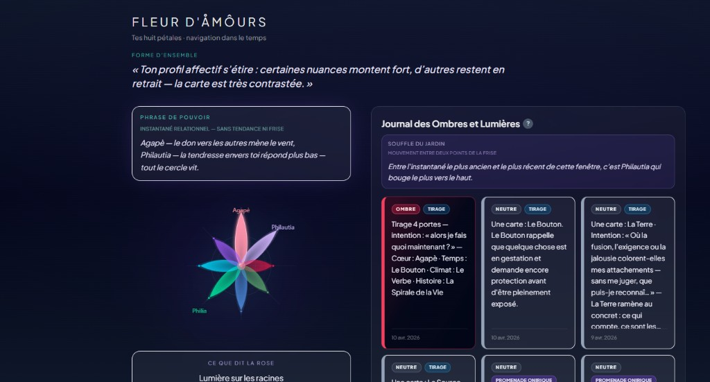
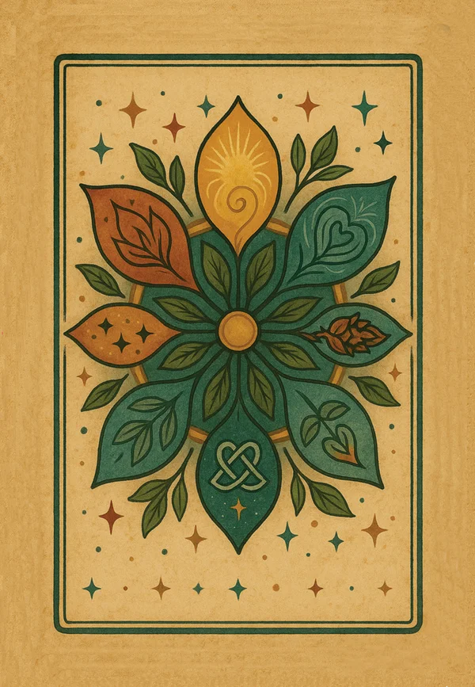

Accroche
Et si l’amour était un langage qu’on peut apprendre ?
Chacun met des réalités différentes derrière ce mot. La Fleur d’AmOurs propose un vocabulaire commun — pour se comprendre sans se perdre.

Trois portes d’entrée
Trois façons d’entrer dans le Jardin
La Fleur
Le cadre : 8 formes d’amour pour cartographier votre façon d’être en relation.

Le Tarot
L’interface papier : jouer, tirer, dessiner — pour travailler sur soi avec le corps et le hasard.

L’Application
Le jardin en ligne : votre fleur, dialoguée avec une IA-tuteur, entre les séances.
Les 8 pétales
Huit tonalités de l’amour
Éros
Désir, élan, force vitale

Agapè
Don sans calcul, ouverture

Philia
Amitié choisie, fraternité

Storgè
Attachement, familiarité

Pragma
Engagement, construction

Ludus
Jeu, légèreté, plaisir

Mania
Intensité, passion

Philautia
Rapport à soi, limites
Bénéfices
Ce que la Fleur apporte
- Un langage commun — pour parler d’amour et de lien sans malentendu.
- Une cartographie claire — voir ce qui est fort, ce qui manque, ce qui demande soin.
- Un miroir non pathologisant — des mots riches, humains, partageables.
- Un fil rouge — entre introspection, couple, équipe ou accompagnement.

Publics
Pour qui ?
Individus
Mieux se connaître dans ses relations et ses élans.
Couples
Mettre des mots sur ce qui se joue entre deux fleurs.
Groupes
Ateliers, équipes, cercles — un langage partagé.

Accompagnants
Coachs, thérapeutes, facilitateurs — un outil de séance.
Cadre clair
Ce que ce n’est pas

Pas de voyance
Le hasard des cartes ouvre un dialogue — il ne prédit pas l’avenir.

Pas une thérapie
Un outil de connaissance de soi. L’humain reste le guide quand il faut soigner.

Pas une étiquette
Votre fleur évolue. C’est un film, pas une photo figée.
Le Tarot
Le Tarot Fleur d’AmOurs
Le jardin en cartes.
Un système pour faire circuler les formes d’amour avec le vivant : le temps végétal, les éléments, les grandes étapes de la vie.
Jouer pour se comprendre — avec le geste, la couleur, la synchronicité.


Tirage phare
Les Quatre Portes du Jardin
Porte 1
Cœur
L’essence — quel amour est en jeu ?

Porte 2
Temps
Le processus — à quelle saison êtes-vous ?

Porte 3
Climat
L’environnement — quelles forces agissent ?

Porte 4
Histoire
Le sens — quel apprentissage dans le récit ?
Exemple
Une phrase, un chemin
Cœur · Philautia
Temps · Racines
Climat · Invisible
Histoire · Métamorphose
« L’amour de moi-même (Philautia) doit accepter une lente phase de Racines avant de s’épanouir, car le climat me demande de faire confiance à l’Invisible. Ce processus mène à une inévitable Métamorphose. »
Pratiques
Des gestes pour entrer en relation
Dessiner sa Fleur
Remplir les huit pétales avec votre histoire, vos couleurs, vos manques.

Danse des cartes
Laisser le jeu et le mouvement révéler ce que les mots seuls ne disent pas.

Triple Fleur
Mettre en dialogue plusieurs fleurs — soi, l’autre, le lien.



Ici, maintenant
Sur ce stand
Touchez le jeu.
Posez une intention.
Ouvrez une porte.
Tirage guidé
Découverte de la Fleur
Échange avec l’équipe
Parcours
En quelques minutes, une carte qui reste

Questionnaire
Des questions simples pour révéler votre profil
Votre Fleur
Huit pétales visualisés — un miroir unique

Dialogue
Questions maïeutiques guidées par l’IA

Suite
Plans concrets et évolution dans le temps


Intelligence artificielle
Ce que l’IA apporte — concrètement
- Interprète votre profil de façon personnelle — pas un texte générique.
- Guide le dialogue par des questions qui font avancer.
- Propose des pistes et des plans d’action adaptés à votre fleur.
- Conserve le fil : votre histoire ne recommence pas à zéro à chaque visite.
Pour les pros
Coachs, thérapeutes, facilitateurs
En séance
Un langage partageable avec vos clients. Un profil clair. Des tirages qui structurent le travail sans remplacer votre posture.

Entre les séances
Vos accompagnés peuvent dialoguer avec leur fleur en ligne — vous restez le guide humain.
Outil d’augmentation — pas de remplacement.
Écosystème
Papier et numérique, une même sève


Le Tarot ancre le corps
Le geste, la table, le hasard, le dessin. Présence. Atelier. Instant partagé.
L’app prolonge le fil
Entre deux rencontres : dialogue, suivi, profondeur — sans perdre le cadre de la Fleur.
Commencer
Envie d’entrer dans le Jardin ?
Parlez-nous sur le stand · Demandez une démo · Découvrez le jeu
eludein.art/jardin
Particuliers
Coachs & thérapeutes
Ateliers & groupes